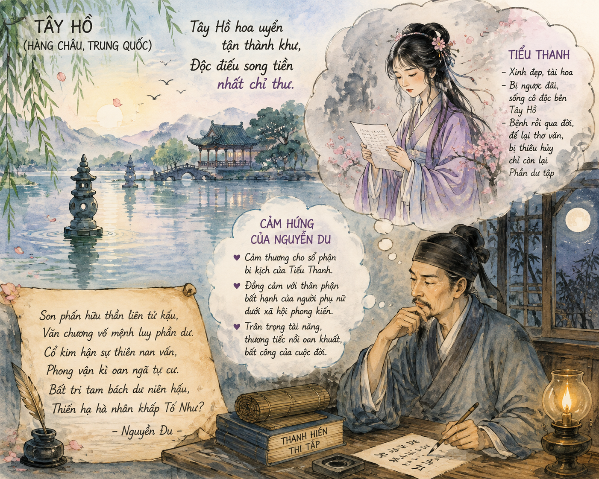

• Tác giả Nguyễn Du: Đại thi hào dân tộc, danh nhân văn hóa thế giới. Ông có trái tim nhân đạo bao la, luôn lắng nghe và thấu cảm trước những nỗi đau khổ của kiếp người nhỏ bé, tài hoa mà bạc mệnh.
• Lai lịch Tiểu Thanh: Là cô gái trẻ tài sắc vẹn toàn, sống vào khoảng đầu triều Minh (Trung Quốc). Năm 16 tuổi, nàng làm vợ lẽ một nhà giàu có nhưng bị vợ cả ghen tuông, ngược đãi, bắt ra sống cô độc ở Cô Sơn (bên thắng cảnh Tây Hồ). Vì đau buồn, nàng lâm bệnh rồi qua đời khi mới 18 tuổi.
• Tập thơ Phần dư tập: Di vật của nàng gồm một tập thơ và bức tranh chân dung bị người vợ cả đốt bỏ. Phần thơ còn sót lại được tập hợp thành Phần dư tập (Bản thảo còn sót lại sau khi bị đốt).
• Hoàn cảnh sáng tác: Nguyễn Du đọc câu chuyện về Tiểu Thanh qua trang sách (Phần dư tập), viếng nàng từ xa bằng niềm thấu cảm sâu sắc qua bài thơ chữ Hán đặc sắc này.

Hình 1: Cảnh Tây Hồ và cảm hứng thơ Nguyễn Du (Đường dẫn sẵn sàng: h1.png)• Thể loại: Thất ngôn bát cú Đường luật (chữ Hán).
• Xuất xứ: Sưu tầm từ dòng họ Nguyễn Tiên Điền, xếp trong tập Thanh Hiên thi tập.
• Bố cục chuẩn Đường luật: Đề (câu 1-2) - Thực (câu 3-4) - Luận (câu 5-6) - Kết (câu 7-8).
| PHIÊN ÂM CHỮ HÁN | DỊCH NGHĨA | DỊCH THƠ (Bản 1 - Vũ Tam Tập) |
|---|---|---|
| Tây Hồ hoa uyển tận thành khu, Độc điếu song tiền nhất chỉ thư. |
Cảnh đẹp Tây Hồ nay đã thành bãi hoang cả rồi, Riêng ta viếng nàng qua một tờ giấy trước cửa sổ. |
Tây Hồ cảnh đẹp hóa gò hoang, Thổn thức bên song mảnh giấy tàn. |
| Chi phấn hữu thần liên tử hậu, Văn chương vô mệnh luy phần du. |
Son phấn vì có thần nên vẫn phải xót xa về những việc sau khi chết, Văn chương không có số mệnh, phải chịu luy bị đốt dở. |
Son phấn có thần chôn vẫn hận, Văn chương không mệnh đốt còn vương. |
| Cổ kim hận sự thiên nan vấn, Phong vận kì oan ngã tự cư. |
Nỗi oán hận xưa nay khó mà hỏi trời cho rõ được, Nỗi oan khiên lạ lùng của kẻ phong nhã, ta tự cũng đặt mình vào. |
Nỗi hận kim cổ trời khôn hỏi, Cái án phong lưu khách tự mang. |
| Bất tri tam bách dư niên hậu, Thiên hạ hà nhân khấp Tố Như? |
Chẳng biết hơn ba trăm năm sau, Trong thiên hạ, người nào sẽ khóc Tố Như? |
Chẳng biết ba trăm năm lẻ nữa, Người đời ai khóc Tố Như chăng? |
* Chú thích thuật ngữ SGK:
- Son phấn (Chi phấn): Hoán dụ chỉ nhan sắc người phụ nữ.
- Văn chương: Chỉ tài năng nghệ thuật, tâm hồn tác giả.
- Tố Như: Tên tự của Nguyễn Du.
- Độc điếu: Một mình viếng trong sự cô đơn.
❓ Câu 1 (SGK): Theo bạn, nội dung câu 1 và câu 2 của bài thơ có mối quan hệ logic với nhau như thế nào?
❓ Câu 2 (SGK): Chỉ ra và nhận xét mối quan hệ đối về ý trong hai câu thực.
❓ Câu 3 (SGK): Phân tích những cảm xúc và suy ngẫm của tác giả được thể hiện qua hai câu luận.
❓ Câu 4 (SGK): Chia sẻ suy nghĩ của bạn về tâm sự của Nguyễn Du ở hai câu kết.
❓ Câu 5 (SGK): Qua bài thơ, tác giả đã khái quát về bi kịch chung của những người tài hoa, phong nhã trong xã hội phong kiến như thế nào?
✍️ Hoạt động 6 (SGK): Hãy tìm đọc và giới thiệu một vài tác phẩm viết về đề tài người phụ nữ của Nguyễn Du.
Đề bài: Viết đoạn văn (khoảng 150 chữ) so sánh nội dung hai câu luận của Độc Tiểu Thanh kí với nội dung hai câu thơ trong Truyện Kiều:
Nguyễn Du viết bài thơ này khi chưa từng giáp mặt Tiểu Thanh, thậm chí chưa từng sang Trung Quốc. Ông viếng nàng hoàn toàn thông qua việc đọc tập thơ Phần dư tập trước cửa sổ. Đây là cuộc tri âm xuyên không gian và thời gian hiếm có trong lịch sử văn học.
Vận dụng kiến thức thi pháp thơ Đường luật (đối, hoán dụ, ước lệ) để phân tích tâm sự nhân vật trữ tình. Tự viết một thư ngỏ hoặc bài thơ gửi tới Nguyễn Du để "trả lời" cho câu hỏi khắc khoải ở cuối bài thơ.
Cần phân biệt giữa bi kịch cá nhân của nàng Tiểu Thanh và tư tưởng xót thương, tự thương của Nguyễn Du. Nguyễn Du khóc cho Tiểu Thanh nhưng cốt lõi là khóc cho chính mình và cho những kiếp tài hoa bạc mệnh trong xã hội cũ.
Chinh phục 10 câu hỏi để khẳng định tri thức văn học!
Bài tập 1: Phân tích ý nghĩa biểu tượng của hai hình ảnh "Son phấn" và "Văn chương" trong hai câu thực bài thơ Độc Tiểu Thanh kí.
Bài tập 2: Cảm hứng nhân đạo trong Độc Tiểu Thanh kí có điểm gì phát triển sâu sắc và mới mẻ hơn so với cảm hứng nhân đạo trong các tác phẩm văn học dân gian cùng viết về người phụ nữ?